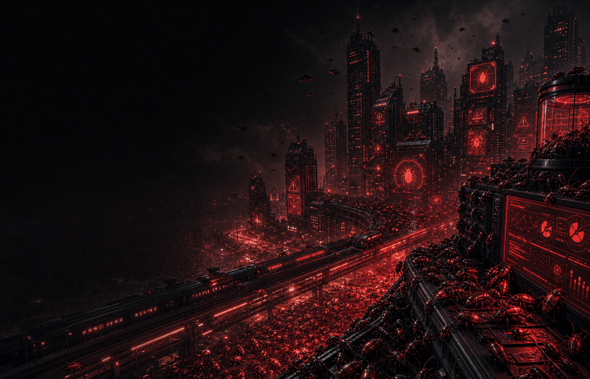
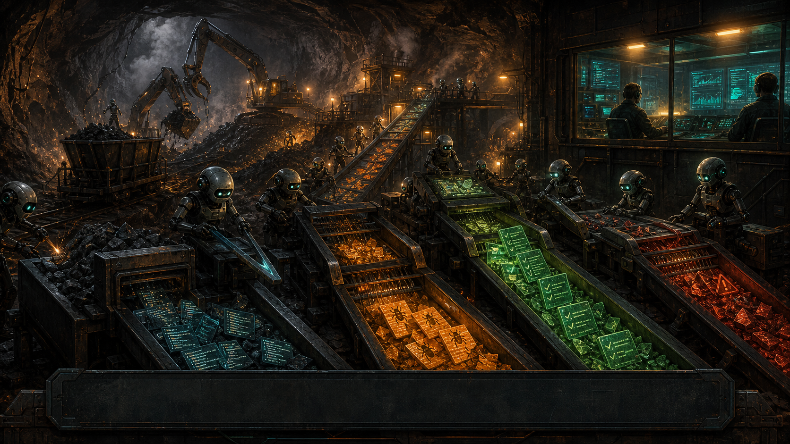
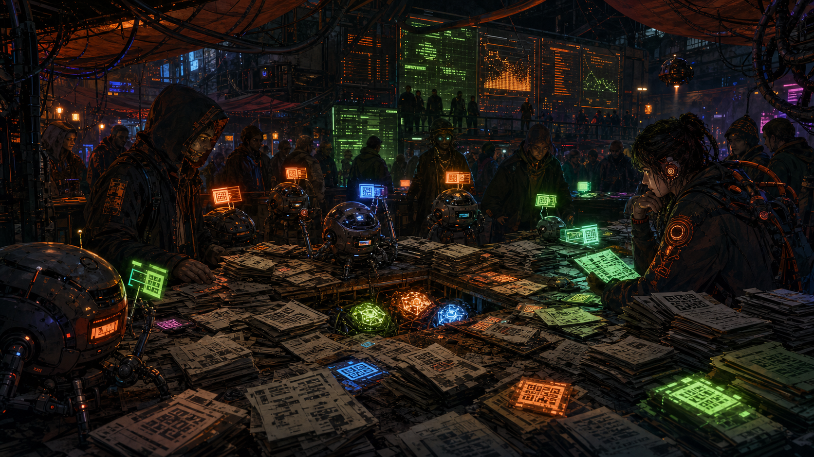
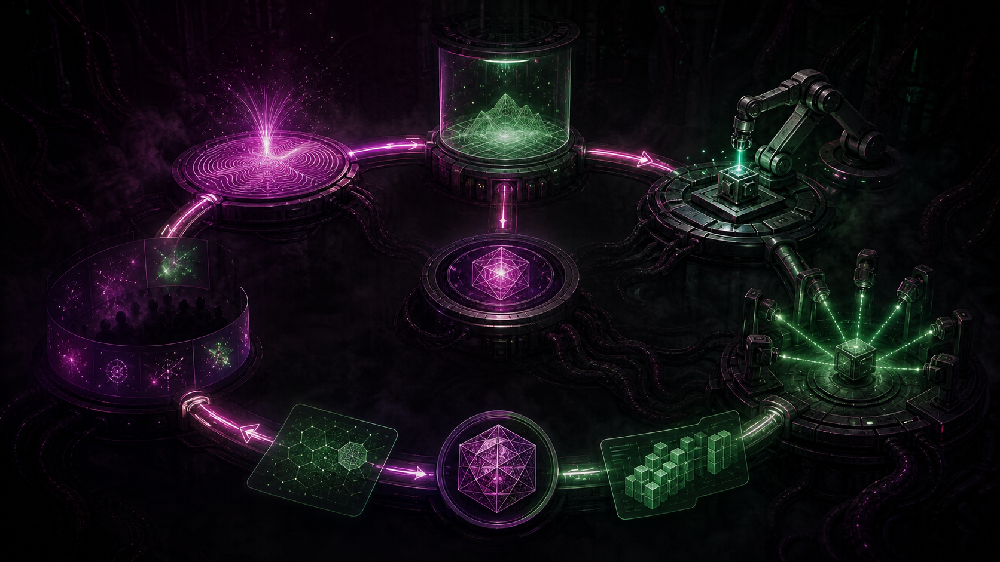

Executive Alignment Briefing / ToorCamp 2026
Working the Slop Mines
Dean Pierce
CorpoSlop, autoresearch, bug markets, and the future role of humanity
Operating Context
The CorpoSlop era
Risk Committee Finding
Quality is still important.
fast broken output is still broken
Step 2
CODEOWNERS
GitHub Docs: code owners
# .github/CODEOWNERS
* @platform
/infra/ @sre
/payments/ @security
/.github/workflows/ @release
path ownership
required review
human routing
blast-radius memory
Unexpected Revival
Test driven development is back.
robots evaluating robots
Work Tracking Mutates
Ticketing systems orchestrate agents now.
- Jira MCP
- backlog state
- ownership
- acceptance criteria
- evidence
Storage Boundary
Focus on robust storage.
Merkle trees are magic
- log everything
- append-only mindset
- no individual should be able to trash the environment
GitOps Premise
Codify everything.
bad code cannot land quietly
process
ownership
tests
deploys
evidence
review boundaries
Infrastructure Mutates
Infra is code now.
cncf.io
git -> controller -> cluster
drift -> reconcile
Kubernetes
declarative APIs
immutable infra
Cloud Native Computing Foundation / 2015

Incentive Failure
Bug bounty starts to bend.
- cheap cognition
- cheap reports
- duplicate floods
- triage overload
- bounty shutdowns
Private Proof / Public Signal
Zero-knowledge exploitability proofs
private exploit witness
-> public vulnerable target
-> ZK proof of impact
-> auto triage score
-> bounty escrow / disclosure path
prove impact, reveal later

Mine Elevator
Autoresearch
benchmarks
work orders
score deltas
The Saga
The ECDSA.fail saga
- unpublished result
- ECC point addition
- Shor bottleneck
- Bitcoin keys
- Google baseline
- Litinski baseline
- agent circuits
- frontier score
The OS Joins In
ThermiteOS
thermiteos.org
Redox microkernel
+ autoresearch daemon
+ Magnesium browser
+ package rebuild loops
+ local repair attempts
+ test suites as survival pressure

Economic Loop
No employees, just incentives.
benefit / money / reputation / leverage
Human Role / Version One
Humans define quality of life.
- create
- build
- educate
- definitions drive code
- code defines reality

Singularity Era
The world is code.
Industrial Substrate
Digital twins eat the factory.
- NVIDIA Omniverse
- simulation CI
- robot rehearsal
- factory test envs
- everything is merkle trees
Future Global Software Ecosystem
The ecosystem wakes up.
prompts / proofs / repos / tentacles
THIS IS FINE